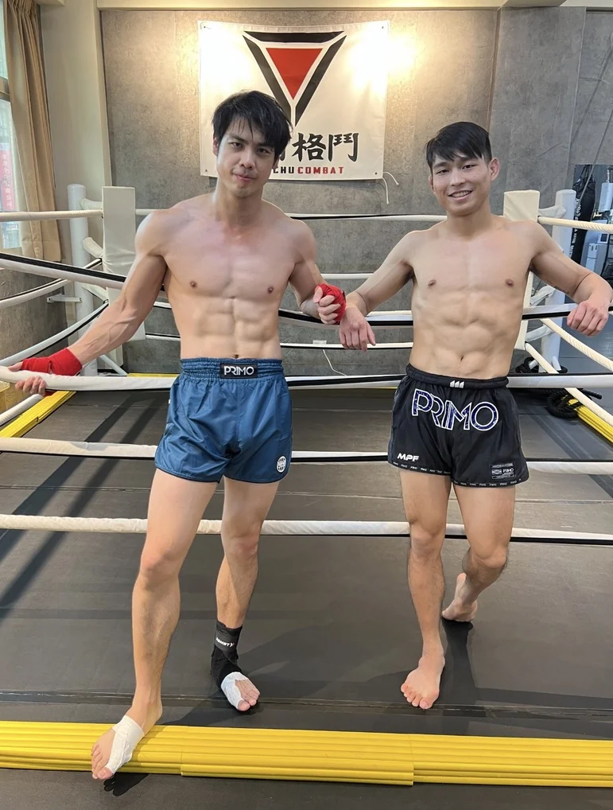

新竹泰拳私人教練怎麼選用一堂體驗看懂教學是否適合你
在新竹找泰拳私人教練，除了比賽經歷與價格，更要看動作回饋、課程安排與溝通方式。整理體驗前六個問題、上課觀察清單和訓練目標範例，幫你安排適合自己的第一堂體驗。
先把你需要的指導說具體
搜尋新竹泰拳私人教練時，先區分自己是完全零基礎，還是已經上過課但遇到卡關。前者可能需要有人一步一步帶著認識站架與基本拳腿；後者則可以帶著一個實際問題來，例如打完組合後總是不知道手腳該回到哪裡。
如果只是寫想變強，教練很難知道你期待什麼。試著補上一個場景與一個想改變的地方，例如下班後想建立固定運動習慣，或上團課時經常跟不上連續動作，希望有人拆開說明。想了解不同課程形式，可以先看團體課與私人課比較。
希望準備比賽，也要說明目前經驗與期待的參賽方向，由教練評估後再討論。不要把一般體驗課當成已經確定的備賽安排。
預約私人教練前先問這六件事
- 是否經常帶和我相似程度的學員 請教練說明零基礎或已有經驗者通常如何開始，不必要求提供其他學員的私人紀錄。
- 第一次會如何了解我的目標 問清楚會不會先了解經驗、可投入時間與希望學到的內容。
- 聽不懂或跟不上時怎麼調整 可以詢問能否把組合拆開、減少同時要記的動作，或換一種示範方式。
- 是否需要接觸對練 如果只想學基本技術與打靶，先說清楚，不必等到上課當天才確認。
- 由誰上課以及能約哪些時段 指定教練、候補與代課安排都應先確認，私人課也不代表任何時間都能預約。
- 完整費用與使用規則 包含人數、堂數、每堂時間、裝備、效期及取消改約方式。
同樣標示私人課，可能是一對一，也可能是兩人同行。若打算找朋友一起練，請另外閱讀一對二私人課安排指南，把兩個人的目標一起提出來。
體驗時觀察回饋是否真的幫得上忙
一堂課能不能學會所有動作，不是適合比較教練的標準。更實際的觀察，是你做完動作後，是否知道哪一點需要調整，以及下一次可以怎麼做。
| 觀察項目 | 課堂上留意 | 課後問自己 |
|---|---|---|
| 目標理解 | 教練是否先了解經驗與想改善的事 | 今天的內容和我的需求有關嗎 |
| 動作回饋 | 提醒是否具體 並讓你再試一次 | 我能說出一個修正重點嗎 |
| 溝通節奏 | 你提出問題時 是否有解釋與調整 | 我敢說聽不懂或需要停一下嗎 |
| 後續方向 | 是否說明下一步可先練什麼 | 我知道下一堂要延續哪個重點嗎 |
手機可左右滑動查看完整表格
不需要只用流汗量、打靶聲或疲累程度評價教學。如果一堂結束後能記住一個重要提醒，並清楚知道如何向教練提問，就有了更具體的比較依據。
讓教練更了解你的訓練目的
填體驗表單時，把目的寫成可討論的內容，有助教練提前理解需求。以下是表達方式的例子，不是保證達成的課程結果。
- 想學技術 我完全沒練過 希望先認識站架與基本直拳 不想一開始記太長的組合
- 想建立習慣 我一週願意安排兩天運動 其中一天希望到館 需要先確認下班後能配合的時段
- 想改善卡關 我有上團課 但左右腳切換容易混亂 希望教練觀察後幫我找出優先練習的重點
- 想試試接觸練習 我希望先了解條件與規則 再由教練確認目前適不適合
表單中的「讓教練更了解我」可以補充經驗、期待與需要調整的情況。也請誠實填寫「你一個禮拜願意花幾天在這項運動上」，不用為了看起來積極而高估能投入的時間。
HCF 新竹格鬥私人課如何開始
HCF 新竹格鬥位於新竹市北區林森路 301 號 2 樓。官網目前列出一對一體驗一堂 60 分鐘 NT$1,400，以及一對一深度體驗兩堂合計 NT$2,400，每堂 60 分鐘。這是 HCF 的體驗資訊，不是新竹私人教練的統一行情；最新條件請看課程價目表。
可先從教練團隊了解教學背景，再填寫「安排我的第一堂體驗」。本頁會帶入私人課詢問偏好，讓你補上訓練目的與方便時間。表單送出後依畫面到官方 LINE 確認並傳送內容，由教練核對可約時段、費用與安排。
送出需求不等於預約成立。收到教練確認後再到館；體驗結束後，再依實際感受與生活安排決定後續課程。

常見問題
沒基礎要先上團課才能找私人教練嗎
不一定。可以直接詢問零基礎私人課，先讓教練知道你沒有學過。團課與私課的選擇，取決於可到的時間與希望得到的指導方式。
教練比賽成績越好就一定越適合我嗎
比賽經歷有助了解技術背景，但還需要觀察示範、回饋與溝通是否適合你。可以同時看經歷與實際體驗，不用只靠單一數字決定。
可以先體驗再決定長期方案嗎
HCF 提供私人課體驗方式。先確認體驗資格、費用與可約時段，再依體驗感受了解後續方案與效期。
想指定教練要怎麼填
在體驗表單補充希望由哪位教練指導，以及方便的時段。指定需求需要由館方確認，填寫偏好不代表該教練已完成排課。
延伸閱讀
先讓教練了解你想怎麼開始
填下訓練目的與可投入的時間 再一起確認適合的第一堂課
課程資訊核對於 2026 年 11 月 15 日 查看最新價目表 可約時段與預約方式由教練確認